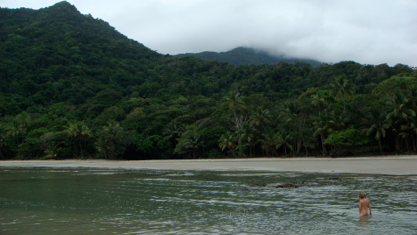
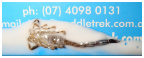
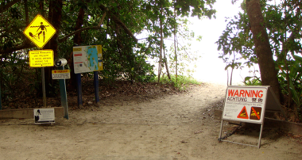

Regnskoven - Cape Tribulation

Regnskoven, en skorpion og historien om en deporteret krokodille
onsdag den 28. november 2007

Kontraster - vi går lige fra de åbne vidder til den tillukkede regnskov. Efter at have forladt Coral Prinsess bliver vi efter en 1 time afhentet af en bus. Det viser sig, at vi er kommet med en fællesbus til regnskoven. Fint nok, hvis bare ikke det var fordi vi var de første, der skulle på, og de sidste ,der blev sat af efter 6 timer - en tur, der normalt tager ca. 2,5 timer - det er lang tid med 2 børn.
Regnskoven er noget helt andet, fyldt med lyde, fugt og uigennemtrængeligt vildnis.Vi er lidt overmættede med oplevelser, og vi kunne godt have brugt et par dage i Cairns til at puste ud i. Her på Cap Tribulation bor der 60 mennesker, en masse kryb og nogle krokodiller. Hotellet ligger fuldstændig isoleret, der er 5 kilometer til byen, som rummer et par cafeer, et stort apotek, ATM og backpacker hotel. Her er smukke strande omgivet af grønne bjerge, men igen : badning forbudt pga. Crocs og stingers. Regnskoven dækker 0,1 % af Australiens areal, så det er i sandhed et unikt sted vi er kommet til.


Nå ja, da vi skulle hjem fra byen i går, måtte bilen holde tilbage for en hidsig Tiger King slange...
Her er meget øde. Vi har stranden helt for os selv. Det er unikt at se hvordan koralrevet møder regnskoven helt nede ved vandet.